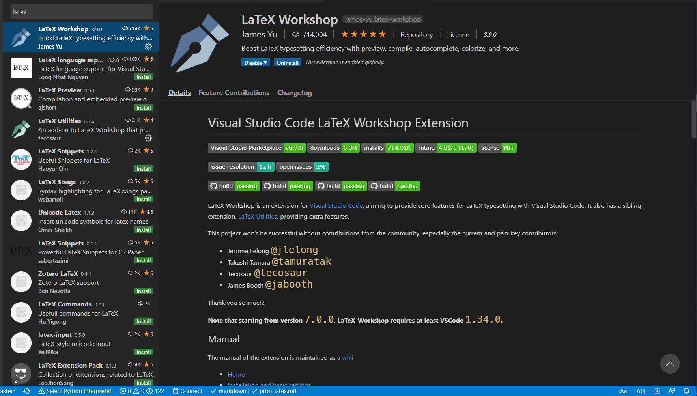
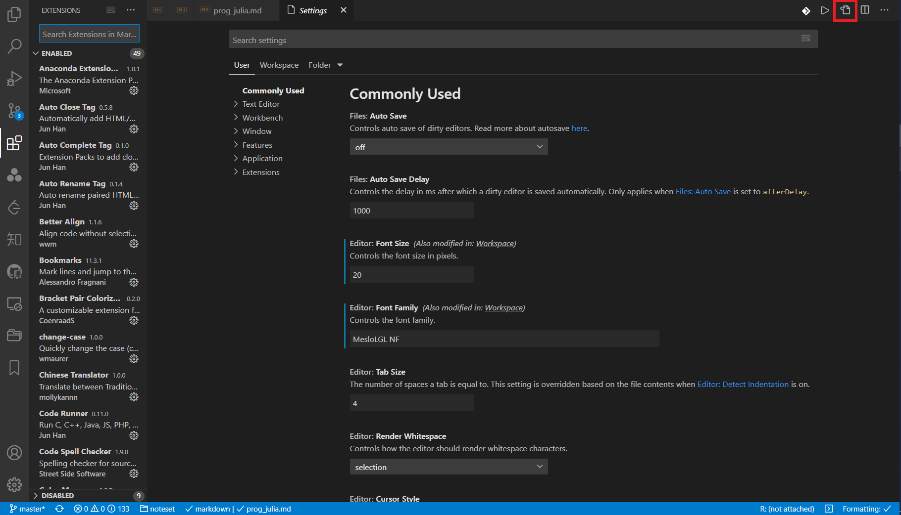
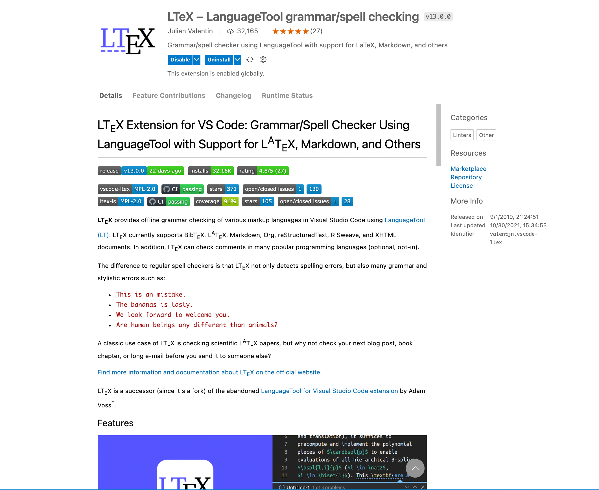
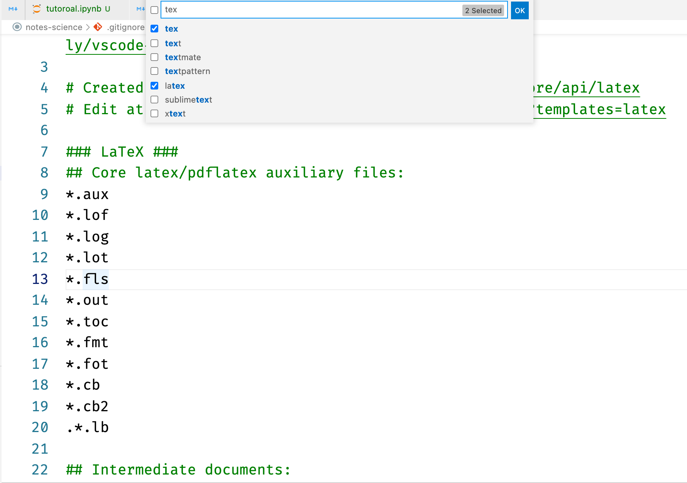

搭建 LaTeX 舒适写作环境
Contents
搭建 LaTeX 舒适写作环境¶
LaTeX 是一套强大的排版系统，在学术论文排版方面应用广泛，很多西方高效和期刊都会提供自己 LaTeX 模板方便论文提交。虽然 LaTeX 有不少相关的 IDE，如 TeXstudio，BaKoMa，LyX 等，但总给人一种笨重的感觉。如今，VSCode 为我们提供了另一种选择。
1. 安装 LaTeX¶
对于 LaTeX 的安装，由于官方的 TeXLive 体积过大，这里推荐用包管理器进行最小安装
对于包管理器的安装和使用，可以查阅本专栏的相关文章，Homebrew 介绍 和 Scoop 介绍
对 macOS 和 Linux 用户，有 Homebrew
brew install basictex
对 Windows 用户，有 Scoop
scoop bucket add scoopet https://github.com/ivaquero/scoopet
scoop install texlive
2. 主要扩展¶
LaTeX Workshop 基本上没什么可说的，使用 VSCode 写 LaTeX 的都会使用这个扩展，可认为是必备。

2.1. 编译策略¶
安装完毕后，”ctrl”+”, ” 打开配置，并在搜索框中输入”json”，打开配置的 .json 文件。

加入如下配置：
{
"latex-workshop.latex.tools": [
{
"name": "pdflatex",
"command": "pdflatex",
"args": [
"-synctex=1",
"-interaction=nonstopmode",
"-file-line-error",
"%DOCFILE%"
]
},
{
"name": "bibtex",
"command": "bibtex",
"args": [
"%DOCFILE%"
]
},
{
"name": "xelatex",
"command": "xelatex",
"args": [
"-synctex=1",
"-interaction=nonstopmode",
"-file-line-error",
"-pdf",
"%DOC%"
]
},
],
// 编译策略
"latex-workshop.latex.recipes": [
{
"name": "xelatex",
"tools": [
"xelatex"
]
},
{
"name": "xelatex -> bibtex -> xelatex*2",
"tools": [
"xelatex",
"bibtex",
"xelatex",
"xelatex"
]
}
],
2.2. 格式化¶
安装 latexindent.pl 对 LaTeX 公式格式化
macOS/Linux 用户使用 Homebrew
brew install latexindent
Windows 用户使用 Scoop
scoop install latexindent
在 settings.json 中，加入
{ "latex-workshop.latexindent.path": "latexindent" }
3. 辅助扩展¶
3.1. 语法检查¶
LaTeX 的用户里，不少人均是使用它进行英文写作的，这时就不免会需要拼写检查，这里推荐多语言扩展基于开源语法检查器 LanguageTool 的 LTeX，其功能如下：
检测语法
检查拼写
自定义字典
自定义检查等级
多语言支持
简单说这相当于整合了一个 Grammarly。

其配置如下：
{
"ltex.language": "en-US",
"ltex.enabled": ["latex"],
"ltex.dictionary": {},
"ltex.latex.commands": {
"\\ref{}": "ignore",
"\\documentclass[]{}": "ignore",
"\\cite{}": "dummy",
"\\cite[]{}": "dummy"
},
"ltex.latex.environments": {
"lstlisting": "ignore",
"verbatim": "ignore"
},
"ltex.markdown.nodes": {
"CodeBlock": "ignore",
"FencedCodeBlock": "ignore",
"AutoLink": "dummy",
"Code": "dummy"
},
"ltex.additionalRules.enablePickyRules": true,
"ltex.additionalRules.motherTongue": "en-US",
"ltex.diagnosticSeverity": "information",
"ltex.ltex-ls.logLevel": "finer",
"ltex.sentenceCacheSize": 2000
}
3.2. 项目管理¶
推荐使用 Git 作为论文的版本管理器，不过这带来一个新的问题，LaTeX 编译过程中会产生一系列过程文件，而这些并没有必要同步 Git 仓库。这里可以安装扩展 .gitignore Generator，在根目录下建立一个.gitignore 文件，把过程文件包含进去来避免不必要的同步。

4. 宏包管理¶
4.1. 基本操作¶
对于 Windows 用户，不需要特别对包进行管理，当在文档中导入未安装的包时，LaTeX 会自动弹出窗口，询问是否安装。
对于 macOS 用户，需要使用包管理器 tlmgr 对 LaTeX 包进行管理。
# 升级自身
sudo tlmgr update --self
# 升级所有包
sudo tlmgr update --all
# 列出已安装包
sudo tlmgr list --only-installed
4.2. 推荐¶
# 中文支持
sudo tlmgr install ctex latexmk
# 化学 & 电子
sudo tlmgr install mhchem chemfig circuitikz
# 排版
sudo tlmgr install multirow ifoddpage relsize titlesec
# 图表
sudo tlmgr install epstopdf subfigure appendix
# 字符 & 字体
sudo tlmgr install ulem xcolor environ letltxmacro enumitem stringenc trimspaces soul algorithm2e genmisc